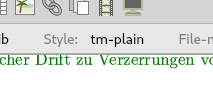
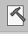
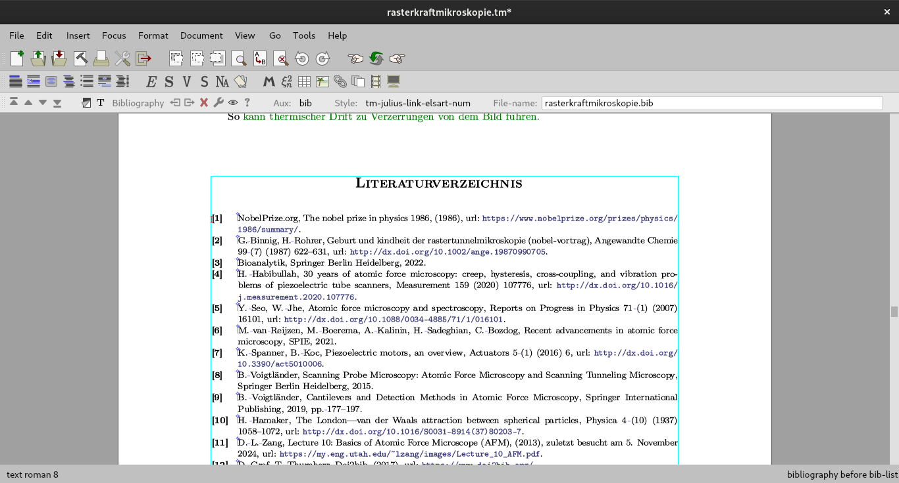

[main]Notes on TeXmacs
[main]Notes on TeXmacs
 [main]Notes on TeXmacs
[main]Notes on TeXmacs
It is a good idea to first choose a style that is close to what you have in mind, and make a derivative of that one. In my case, `tm-elsart-num` was a good starting point, since it orders the sources in the order that they appear in the text and cites numerically.
Once you have as style that you like, we need to find the Scheme files, where the code for the bibliographies are located. These are in the TeXmacs data directory. On Linux and MacOS, this is usually located at /home/$USER/.TeXmacs/. On Windows the path should be %appdata%/TeXmacs.
If for some reason it isn't there, you can download this TeXmacs file, open it in TeXmacs and follow the instructions in the file.
Navigate to the TeXmacs data directory and go to progs. If there is no folder named bibtex here, create an empty folder and name it bibtex.
Download the Style that is closest to what you from the TeXmacs Git Repository here and copy it to this folder (/progs/bibtex/ in the TeXmacs data directory). Rename the stylefile with a good name for your modified style (like julius-link-elsart-num.scm to make it easy to remember what your style is in the future).
Open the file in your text editor of choice. Use Replace (often ctrl+h) to replace the original name of the file, in our example elsart-num with the name of your style, which should be the same as the file name you have chosen for your style file. Replace all occurrences in the document.
notice that the document julius-link-elsart-num.scm, which looked like this at the top of the document … ↓
14: (texmacs-module (bibtex elsart-num) 15: (:use (bibtex bib-utils) (bibtex plain)))
… should now look like this ↓
14: (texmacs-module (bibtex julius-link-elsart-num) 15: (:use (bibtex bib-utils) (bibtex plain)))
If you scroll down, you will see the definitions for the different parts of the BibTeX bibliography. They are Scheme function applications like (tm-define (bib-format-name x), etc.
Below the other tags, append the following (in my case at line 100):
;; Added function to format URL field
(define (bib-format-url x)
(let* ((u (bib-field x "url")))
(if (bib-null? u) "" `(concat "url: " ,u))))
Then add the url field to the article entry definition just below: So look for this part in the file… ↓
(tm-define (bib-format-article n x)
(:mode bib-julius-link-elsart-num?)
`(concat ,(bib-format-bibitem n x)
,(bib-label (list-ref x 2))
,(bib-new-block
(bib-new-sentence
`(,(bib-format-author x)
,(bib-format-field-Locase x "title")
,@(if (bib-empty? x "crossref")
`(,(bib-format-vol-num-pages x))
`((concat ,(bib-translate "in ")
(cite ,(bib-field x "crossref")))
,(bib-format-pages x)))
,(bib-format-note x))))))
… and add the last line below ↓
(tm-define (bib-format-article n x)
(:mode bib-julius-link-elsart-num?)
`(concat ,(bib-format-bibitem n x)
,(bib-label (list-ref x 2))
,(bib-new-block
(bib-new-sentence
`(,(bib-format-author x)
,(bib-format-field-Locase x "title")
,@(if (bib-empty? x "crossref")
`(,(bib-format-vol-num-pages x))
`((concat ,(bib-translate "in ")
(cite ,(bib-field x "crossref")))
,(bib-format-pages x)))
,(bib-format-note x)
,(bib-format-url x))))))
Do this for the other entry types on which you want the urls to show up on.
If you have TeXmacs opened, then restart it now so that it can reload the bibliographies.
Then open the document and head down to the bibliography.
Click on the bibliography, click on the current `style`:

And click on `Other …`. It will show a Pop-Up, where you can enter the name of your style, prefixed with "tm-". For example, `tm-julius-link-elsart-num`. Then click on "ok". Now rebuild the current buffer (either click on the button or do `crtl`+`shift`+`R`). The sources should now show up.
